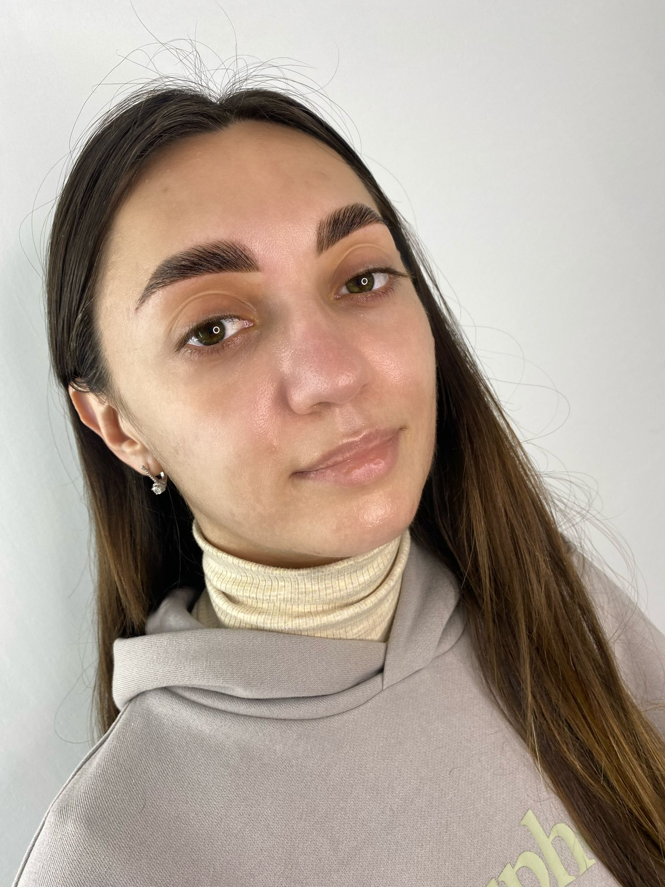

ДЛЯ ЧЕГО НУЖНЫ БРОВИ ?
Защитная функция Основная функция бровей - это защита глаз .
Это специфический волосяной покров помогает человеку выжить в
экстремальных ситуациях . Так,когда наши предки вступили в
схватку с каким-нибудь диким животным ,во время тяжелой борьбы
их прошибал пот . В нем,как известно ,содержатся вредные для
глаз сернокислые соединения ,которые заставляю нас
непроизвольно моргать ,лишая на доли секунды зрения👁. Этого
момента могло окопаться достаточно для того ,что бы дикий
зверь нанёс человеку смертельную рану . Но в битве этой чаще
всего побеждал наш предок ,так как пот со лба попадал не в
глаза ,а стекал по переносице и висках. И спасибо за это стоит
сказать нашим бровям ,чьи волоски значительно отстают от кожи
и загибаются в бок . Это преграда спасает нас не только от
пота и влаги. Невербальное-коммуникативная функция Брови
помогают нам выражать различные эмоции :. Это позволяет
собеседнику быстрее понять ,как вы относитесь к той или иной
идее или событию. Эстетическая функция Женщины издревле поняли
,что правильный уход за надглазным волосяным покровом способен
значительно увеличить их привлекательность на рынке невест.
Именно поэтому дамы подкрашивали брови,придавали им различную
форму,а иногда даже подчеркивали собственную индивидуальность
с помощью пирсинга.